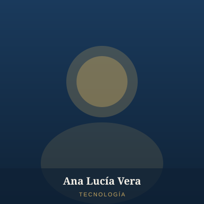
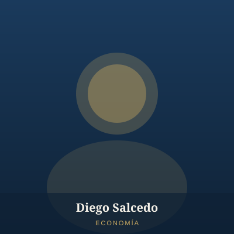

Acerca de Macarenco
Revista informativa de la Asociación de Pedagogos de Cuba, Filial Santiago de Cuba. Pensamiento pedagógico, práctica educativa y debate profesional para los educadores cubanos.
Nuestra misión
Desde 1961, Macarenco cubre el pensamiento y la práctica pedagógica de la Filial Santiago de Cuba con una mirada analítica, independiente y orientada a la transformación de la escuela. Combinamos el rigor de la tradición pedagógica cubana con la agilidad del medio digital, sin sacrificar profundidad por velocidad.
Cada semana, nuestros editores y colaboradores seleccionan, verifican y contextualizan la información que importa para los docentes, formadores e investigadores que sostienen la educación en los nueve municipios de la provincia de Santiago de Cuba.
El equipo editorial
Elena Mariscal Hechavarría
Roberto Ferrer Castellanos

Ana Lucía Vera Nápoles
